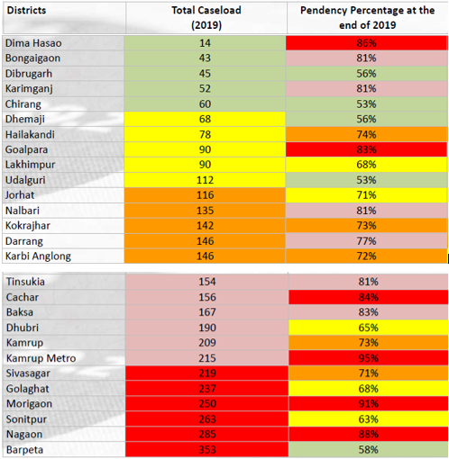

Assam POCSO Factsheet (2012 - 2020)
CivicDataLab
Last updated: 21 March, 2022 (See changelog).
Chart 1 - Total Cases
/
Chart 2 - Cases pending
Table 1 - Cases pending under each category

Table 2 - Conviction rates by type of offence

Table 3 - Time taken for disposal

Table 4 - Disposal time as per the nature of disposal

Table 5 - District Report Card

Insights
Assam witnessed an increase in disposal rate from 9% in 2014 to 20% in 2015, it again saw a decline from to 16% in 2016.
Of the top 6 districts with the highest court caseload in Assam, Nagaon and Morigaon require utmost attention since their performance is poor on all parameters studied - the caseload is high (266 & 257 Cases respectively) and so is pendency due to poor disposal.
Cachar and Kamrup Metro have very high pendency and low disposal, particularly Kamrup Metro with a disposal rate as low as 5%.
Dima Hasao needs attention as reasons for high pendency and low disposal require a thorough assessment, given that the district has the lowest court caseload in the entire State.
Districts that seem to be doing better than others on all three counts, viz. court caseload, pendency and disposal are Dibrugarh, Chirang, Dhemaji, Lakhimpur and Udalguri.